<!doctype html>

<html>
<head>
  <meta name="viewport" content="width=device-width, minimum-scale=1.0, initial-scale=1.0, user-scalable=yes">
  <meta name="theme-color" content="#4F7DC9">
  <meta charset="UTF-8">
  <title>Espresso APIを使いこなしてUIテストを書いてみよう</title>
  <link rel="stylesheet" href="//fonts.googleapis.com/css?family=Source+Code+Pro:400|Roboto:400,300,400italic,500,700|Roboto+Mono">
  <link rel="stylesheet" href="//fonts.googleapis.com/icon?family=Material+Icons">
  <link rel="stylesheet" href="https://storage.googleapis.com/codelab-elements/codelab-elements.css">
  <link rel="stylesheet" href="../assets/style.css">
  <style>
      tbody tr:nth-child(2) {
        background: #eee
      }
      tbody td {
        border: 1px solid #ccc
      }
    .success {
      color: #1e8e3e;
    }
    .error {
      color: red;
    }
  </style>
</head>
<body>
  <google-codelab-analytics gaid="UA-101877661-28"></google-codelab-analytics>
  <google-codelab codelab-gaid=""
                  id="android-ui-tests-espresso"
                  title="Espresso APIを使いこなしてUIテストを書いてみよう"
                  environment="web"
                  feedback-link="https://dena.github.io/codelabs/">
    
      <google-codelab-step label="概要" duration="0">
        <p>このCodelabでは、Espressoを使ったAndroidのUIテストの書き方を学びます。</p>
<h2 is-upgraded>学べること</h2>
<ul>
<li>Espresso APIを使った画面操作の方法</li>
<li>RecylerViewのテストを書く方法</li>
<li>非同期処理のテストを書くための待ち合わせの方法</li>
</ul>
<h2 is-upgraded>事前知識として必要なもの</h2>
<ul>
<li><a href="https://kotlinlang.org/" target="_blank">Kotlin</a>の基本的な理解</li>
<li><a href="https://junit.org/junit4/" target="_blank">JUnit4</a>の基本的な理解</li>
<li><a href="https://developer.android.com/jetpack?hl=JA" target="_blank">Android Jetpackコンポーネント</a>のアーキテクチャライブラリであるViewModel、Data Bindingへの初歩的な理解</li>
<li><a href="https://developer.android.com/studio/index.html?hl=ja" target="_blank">Android Studio</a>の基本的な操作方法への理解。ビルド、local test、instrumented testの実行方法など。</li>
</ul>


      </google-codelab-step>
    
      <google-codelab-step label="事前準備" duration="5">
        <h2 is-upgraded>推奨環境</h2>
<ul>
<li><a href="https://kotlinlang.org/" target="_blank">Kotlin</a>1.3.31</li>
<li><a href="https://developer.android.com/studio/index.html?hl=ja" target="_blank">Android Studio</a>バージョン3.5.2</li>
<li>Android 4.4以上（APIレベル19）以降を搭載したデバイスまたはエミュレータ</li>
</ul>
<h2 is-upgraded>Android端末の設定</h2>
<ul>
<li>Android Studio 3.5以上を用意します</li>
<li>実機を利用しない場合は、Androidエミュレータ(API 21以上ならOKです)をダウンロードします</li>
<li>このCodelabで利用するエミュレータを起動し、以下の項目を設定します<br>(実機を利用する場合も同じように設定をしてください。機種によってメニュー構成が異なります)<br><br><ul>
<li><code>Settings &gt; System &gt; Language &amp; input &gt; Language</code>を<code>English (United States)</code>にする</li>
<li>Developer Optionsメニューを表示したことが無い場合は、<br><code>Setting &gt; System &gt; About emulator device &gt; Build number</code>を何回もタップし、Developer Optionsメニューを表示させる</li>
<li><code>Settings &gt; System &gt; Advanced &gt; Developer Options</code>を表示し、以下の設定を全てOFFにする<br><ul>
<li>Window animation scale</li>
<li>Transition animation scale</li>
<li>Animator duration scale</li>
</ul>
</li>
</ul>
</li>
<li>次の<a href="https://github.com/DeNA/codelabs" target="_blank">Gitリポジトリ</a>をcloneします<pre><code>$ git clone git@github.com:DeNA/codelabs.git
</code></pre>
</li>
<li><code>codelabs/sources/android-ui-tests-espresso</code>ディレクトリに題材アプリがありますので、それをAndroid Studioで開きます</li>
<li>題材アプリをビルドし、エミュレータ・実機にインストール・起動できることを確認します</li>
</ul>
<h2 is-upgraded>題材アプリ</h2>
<p>GoogleがAndroid Jetpackのサンプルアプリとして公開している<a href="https://github.com/googlesamples/android-sunflower" target="_blank">Android Sunflower</a>の2019年5月18日時点のソースコードをベースに、少し改修を加えたものを題材として使用します。改修内容としては、JavaからKotlinへの書き換えなどを行いました。</p>
<p>主要な機能は以下のとおりです。ビルドをして確認してみてください。</p>
<ul>
<li>植物の一覧(Plant list)を表示する</li>
<li>植物の詳細(Plant detail)を表示する</li>
<li>植物を自分の庭(My garden)に登録する</li>
</ul>
<p class="image-container">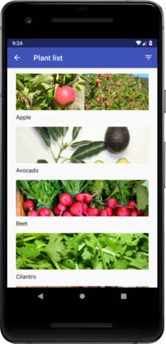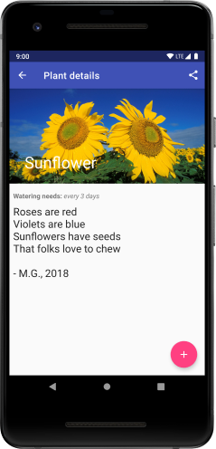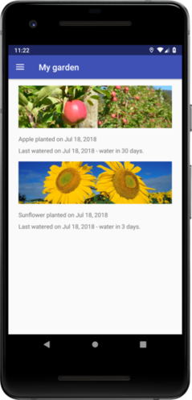</p>


      </google-codelab-step>
    
      <google-codelab-step label="[座学] Activity/Fragmentの起動" duration="10">
        <p>EspessoでUIテストを書くために、まずテスト対象の画面を起動する必要があります。<br>ActivityとFragment、それぞれ起動するためのAPIを紹介します。</p>
<h2 is-upgraded>Activityの起動</h2>
<p><a href="https://developer.android.com/training/testing" target="_blank">AncroidX Test</a>には、Activityの起動やステートの変更を行える<a href="https://developer.android.com/reference/androidx/test/core/app/ActivityScenario" target="_blank">ActivityScenario</a>というクラスが含まれています。</p>
<p>ActivityScenarioは、local testsからでもinstrumented testsからでも使えるAPIです。</p>
<p>ActivityScenarioを利用するためには、<code>app/build.gradle</code>に次の設定が必要です。</p>
<pre><code>dependencies {

    // local testで使いたい場合
    testImplementation &#39;androidx.test:core-ktx:X.X.X&#39;

    // instrument testで使いたい場合
    androidTestImplementation &#39;androidx.test:core-ktx:X.X.X&#39;
}
</code></pre>
<p><a href="https://developer.android.com/reference/androidx/test/ext/junit/rules/ActivityScenarioRule" target="_blank">ActivityScenarioRule</a>をRuleに設定すると、各テストの開始時に<code>ActivityScenario.launch</code>を、テスト終了時に<code>ActivityScenario.close</code>を自動的に呼びます。</p>
<pre><code>@RunWith(AndroidJUnit4::class)
class MyTestSuite {

    @get:Rule val activityScenarioRule = activityScenarioRule&lt;MyActivity&gt;()

    @Test fun test() {
        //テストコード
        onView(withId(R.id.text)).check(matches(withText(&#34;Hello World!&#34;)))
    }
}
</code></pre>
<p>この時、作られたActivityは<code>RESUMED</code>ステートになります。<br><code>RESUMED</code>ステート中のActivityは、ユーザーに対してvisible状態であり、ユーザーはActivityのView要素を操作することができます。</p>
<h2 is-upgraded>Fragmentの起動</h2>
<p>FragmentもActivityと同様に、テストにおいて、Fragmentの生成から状態変更までを操作するための<a href="https://developer.android.com/reference/androidx/fragment/app/testing/FragmentScenario" target="_blank">FragmentScenario</a>というAPIが用意されています。</p>
<p>こちらも、local testsからでもinstrumented testsからでも使えるAPIです。</p>
<p>FragmentScenarioを利用するためには、<code>app/build.gradle</code>に次の設定が必要です。</p>
<pre><code>dependencies {
    debugImplementation &#39;androidx.fragment:fragment-testing:X.X.X&#39;
}
</code></pre>
<p>FragmentScenarioには、次のタイプのフラグメントを起動するメソッドが組み込まれています。</p>
<ul>
<li>グラフィカルフラグメント<br><ul>
<li>ユーザーインタフェースが含まれるフラグメント</li>
<li>Espressoのテストを書きたい場合はこちらを使う</li>
</ul>
</li>
<li>非グラフィカル フラグメント<br><ul>
<li>複数のアクティビティに組み込まれている情報の格納や短期処理を行う、グラフィカルフラグメント以外のフラグメント</li>
</ul>
</li>
</ul>
<p><strong>グラフィカルフラグメントの起動コード</strong></p>
<pre><code>@RunWith(AndroidJUnit4::class)
class MyTestSuite {

    @Test fun testEventFragment() {

        val scenario = launchFragmentInContainer&lt;MyFragment&gt;()

        // テストコード
        onView(withId(R.id.text)).check(matches(withText(&#34;Hello World!&#34;)))
    }
}
</code></pre>
<p><strong>非グラフィカルフラグメントの起動コード</strong></p>
<pre><code>@RunWith(AndroidJUnit4::class)
class MyTestSuite {

    @Test fun testEventFragment() {

        val scenario = launchFragment&lt;MyFragment&gt;()

        // テストコード
        // Espressoのテストを実装するとExceptionになる
    }
}
</code></pre>
<p>どちらの起動方法でも、FragmentScenarioはテスト中のフラグメントの状態を<code>RESUMED</code>に変更します。<br>また、プロダクトコードでどのActivityにアタッチされているかに関係なく、テスト用の空のActivityにアタッチされて起動します。</p>
<h3 is-upgraded>FragmentScenarioの引数</h3>
<p>FragmentScenaioは次の引数をとります。</p>
<table>
<tr></tr>
<tr><td colspan="1" rowspan="1"><p>引数名</p>
</td><td colspan="1" rowspan="1"><p>引数型</p>
</td><td colspan="1" rowspan="1"><p>概要</p>
</td></tr>
<tr><td colspan="1" rowspan="1"><p>fragmentArgs</p>
</td><td colspan="1" rowspan="1"><p>Bundle</p>
</td><td colspan="1" rowspan="1"><p>Fragment起動時のargument</p>
</td></tr>
<tr><td colspan="1" rowspan="1"><p>themeResId</p>
</td><td colspan="1" rowspan="1"><p>int</p>
</td><td colspan="1" rowspan="1"><p>FragmentのUIテーマ<br>Material Designのコンポーネントなど、テーマの指定が必要なUIコンポーネントがレイアウトにあるときは指定をしないとエラーになる</p>
</td></tr>
<tr><td colspan="1" rowspan="1"><p>factory</p>
</td><td colspan="1" rowspan="1"><p>FragmentFractory</p>
</td><td colspan="1" rowspan="1"><p>Fragmentの生成Factory</p>
</td></tr>
</table>
<h3 is-upgraded>参考ドキュメント</h3>
<p>ActivityとFragmentのテストについて、さらに詳しい情報は公式ドキュメントを御覧ください。</p>
<ul>
<li><a href="https://developer.android.com/guide/components/activities/testing" target="_blank">https://developer.android.com/guide/components/activities/testing</a></li>
<li><a href="https://developer.android.com/training/basics/fragments/testing" target="_blank">https://developer.android.com/training/basics/fragments/testing</a></li>
</ul>


      </google-codelab-step>
    
      <google-codelab-step label="[座学] Espresso APIの基本" duration="10">
        <p>Espressoを使ってテストコードを書くときの基本構造について学びます。<br>すでに精通している場合は、次ページへと進んでください。</p>
<h2 is-upgraded>基本構造</h2>
<p>Espressoを使ったテストコードは、原則として下に示した基本構造を繰り返して書くことになります。</p>
<pre><code>onView(ViewMatcher).perform(ViewAction).check(ViewAssertion)
</code></pre>
<p>この基本構造の処理内容は下のようになります。</p>
<ol type="1">
<li>ViewMatcherで指定された条件を満たすViewを探す（onView）</li>
<li>条件に合致したViewに対して、クリックやスクロールといったViewActionを実行する（perform）</li>
<li>ViewAssertionで指定したアサーションを満たしているか検証する（check）</li>
</ol>
<p>条件に合致するViewが複数存在する場合や、合致するViewが見つからなかった場合は例外が発生します。</p>
<aside class="warning"><p>実際の処理の順番は上に書いたものと異なります。onView()によるViewの検索は、perform()やcheck()が呼び出されたタイミングで行われます。onView()を呼び出した時点ではないため、注意してください。</p>
</aside>
<h2 is-upgraded>ViewMatcherの書き方</h2>
<p>onViewの引数、ViewMatcherはどのように書けばよいのかを説明します。<br>ViewMatcherには、Matcher&lt;View&gt;型を返すメソッドを指定します。<br>そのメソッドには色々な種類があるので、よく使うものを下の表にまとめました。</p>
<p>メソッドは<code>androidx.test.espresso.matcher.ViewMatchers</code>に定義されており、返り値の型はいずれも<code>Matcher&lt;View&gt;</code>です。</p>
<table>
<tr></tr>
<tr><td colspan="1" rowspan="1"><p>メソッド名</p>
</td><td colspan="1" rowspan="1"><p>引数の型</p>
</td><td colspan="1" rowspan="1"><p>メソッドの概要</p>
</td></tr>
<tr><td colspan="1" rowspan="1"><p>withId</p>
</td><td colspan="1" rowspan="1"><p>Int</p>
</td><td colspan="1" rowspan="1"><p>引数とリソースIDが一致するViewとマッチ</p>
</td></tr>
<tr><td colspan="1" rowspan="1"><p>withText</p>
</td><td colspan="1" rowspan="1"><p>String etc.</p>
</td><td colspan="1" rowspan="1"><p>引数と表示テキストが一致するViewとマッチ</p>
</td></tr>
<tr><td colspan="1" rowspan="1"><p>isDisplayed</p>
</td><td colspan="1" rowspan="1"><p>引数なし</p>
</td><td colspan="1" rowspan="1"><p>画面に一部分でも表示されているViewとマッチ</p>
</td></tr>
<tr><td colspan="1" rowspan="1"><p>isDescendantOfA</p>
</td><td colspan="1" rowspan="1"><p>Matcher&lt;View&gt;</p>
</td><td colspan="1" rowspan="1"><p>引数にマッチしたViewの子孫となるViewとマッチ</p>
</td></tr>
<tr><td colspan="1" rowspan="1"><p>hasDescendant</p>
</td><td colspan="1" rowspan="1"><p>Matcher&lt;View&gt;</p>
</td><td colspan="1" rowspan="1"><p>引数にマッチしたViewを子孫にもつViewとマッチ</p>
</td></tr>
</table>
<p>withIdを使った例は次のようになります。これは、idがmessageになっているViewとマッチすることを意味します。</p>
<pre><code>onView(withId(R.id.message))
</code></pre>
<p>また、isDescendantOfAやhasDescendantは、Viewの子孫を条件に設定する場合に使用できます。<br>isDescendantOfAやhasDescendantは名前がややこしいですが、下記の図のような関係になっています。</p>
<p class="image-container">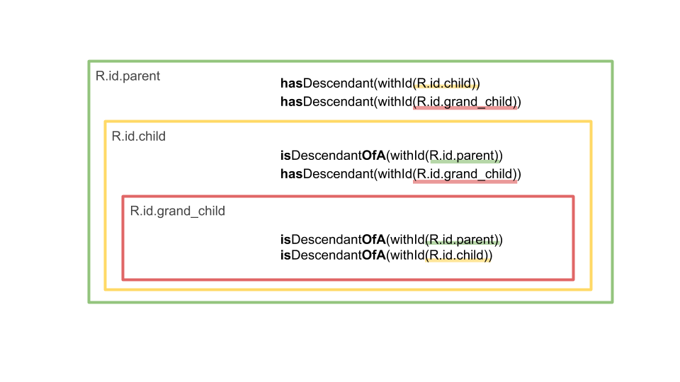</p>
<p>子孫を条件として使う例として、同じカスタムViewを複数持つ画面があったとします。</p>
<p class="image-container">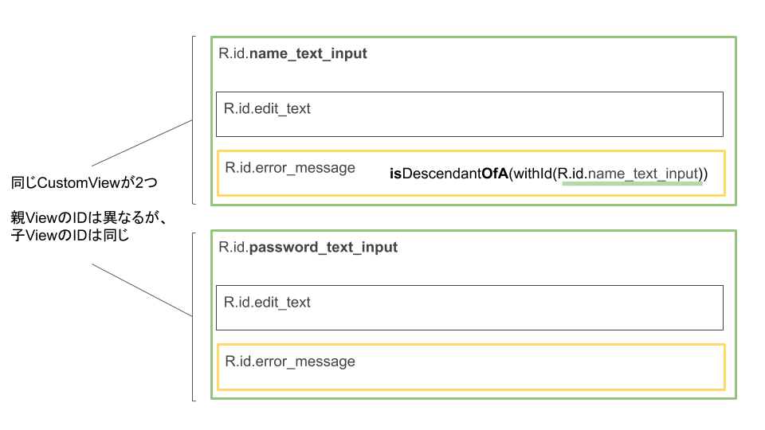</p>
<p>このような画面で、R.id.error_messageを検証したいとき、IDのみの指定では対象のViewを絞ることができません。<br>そこで、isDescendantOfAの登場です。</p>
<p>次のように書くことで、R.id.name_text_inputの子孫のR.id.error_messageを絞り込むことができます。</p>
<pre><code>// 2つのViewMatcherを**allOf**で囲むことで、アンド条件で検索をする
onView(allOf( 
            withId(R.id.error_message),
            isDescendantOfA(withId(R.id.name_text_input))))
</code></pre>
<h2 is-upgraded>ViewActionの書き方</h2>
<p>performの引数、ViewActionとしてよく使うメソッドを下にまとめました。<br>メソッドは<code>androidx.test.espresso.action.ViewActions</code>に定義されており、返り値の型はいずれも<code>ViewAction</code>です。</p>
<table>
<tr></tr>
<tr><td colspan="1" rowspan="1"><p>メソッド名</p>
</td><td colspan="1" rowspan="1"><p>引数の型</p>
</td><td colspan="1" rowspan="1"><p>メソッドの概要</p>
</td></tr>
<tr><td colspan="1" rowspan="1"><p>click</p>
</td><td colspan="1" rowspan="1"><p>引数なし</p>
</td><td colspan="1" rowspan="1"><p>目的のViewをクリックする</p>
</td></tr>
<tr><td colspan="1" rowspan="1"><p>replaceText</p>
</td><td colspan="1" rowspan="1"><p>String</p>
</td><td colspan="1" rowspan="1"><p>目的のEditTextに、引数に指定されたテキストをセットする。もともと設定されていたテキストはクリアする</p>
</td></tr>
<tr><td colspan="1" rowspan="1"><p>scrollTo</p>
</td><td colspan="1" rowspan="1"><p>引数なし</p>
</td><td colspan="1" rowspan="1"><p>目的のViewが画面内に現れるまでスクロールする</p>
</td></tr>
</table>
<p>Actionは複数指定することができ、第一引数から順に実行されます。<br>以下のようにperformを実装した場合、目的のViewまでスクロールした後にクリックをします。</p>
<pre><code>perform(scrollTo(), click())
</code></pre>
<aside class="warning"><p>scrollToについて<br></p>
<ul>
<li>画面に表示されていない要素はアクションをすることができません。そのため、小さい画面のときに画面外に押し出されてしまう可能性のあるViewについては、上記のコードのようにperform()の第一引数にscrollTo()を指定しておくと安心です。また、すでに画面内に目的のViewがある場合には何もしません。</li>
<li>RecyclerView（後半のセクションで解説します）のように画面外のリストアイテムがまだ存在していない場合は、scrollTo()は期待通りに動作しません。</li>
</ul>
</aside>
<aside class="warning"><p>typeTextについて<br></p>
<ul>
<li>replaceTextと似た名前のメソッドにtypeTextがありますが、これらは振る舞いが異なります。<br><ul>
<li>replaceText(): setTextを行う</li>
<li>typeText(): IMEにキーイベントを送る</li>
</ul>
</li>
<li>このため、typeTextはテストの際に意図しない動作になる可能性があり、原則として使わないことをおすすめします。例えば、ローマ字での日本語入力モードのときに&#34;a&#34;を設定すると、&#34;あ&#34;と入力されます。</li>
</ul>
</aside>
<h2 is-upgraded>ViewAssertionの書き方</h2>
<p>checkの引数、ViewAssertionとしてよく使うメソッドを下にまとめました。<br>メソッドは<code>androidx.test.espresso.assertion.ViewAssertions</code>に定義されており、返り値の型はいずれも<code>ViewAssertion</code>です。</p>
<table>
<tr></tr>
<tr><td colspan="1" rowspan="1"><p>メソッド名</p>
</td><td colspan="1" rowspan="1"><p>引数型</p>
</td><td colspan="1" rowspan="1"><p>メソッドの概要</p>
</td></tr>
<tr><td colspan="1" rowspan="1"><p>doesNotExist</p>
</td><td colspan="1" rowspan="1"><p>引数なし</p>
</td><td colspan="1" rowspan="1"><p>指定された検索条件にマッチするViewが存在しないこと(GONEの状態ではなく、View Treeに存在しないこと)を検証する)</p>
</td></tr>
<tr><td colspan="1" rowspan="1"><p>matches</p>
</td><td colspan="1" rowspan="1"><p>Matcher&lt;? super View&gt;</p>
</td><td colspan="1" rowspan="1"><p>指定された検索条件にマッチするViewが、matches()の引数に指定された条件を満たすことを検証する</p>
</td></tr>
</table>
<h2 is-upgraded>例</h2>
<p>ここまでの内容を踏まえて、例えば、「R.id.buttonのボタンをクリックし、ボタンに表示されるテキストが「pushed」になることを確認する」場合は次のようになります。</p>
<pre><code>onView(withId(R.id.button)).perform(click()).check(matches(withText(&#34;pushed&#34;)))
</code></pre>
<p><code>check</code>や<code>perform</code>は省略可能です。例えば、「R.id.buttonのボタンを押したら、R.id.textのViewにOKと表示されることを確認する」を検証したい場合は次のように書きます。</p>
<pre><code>onView(withId(R.id.button)).perform(click())
onView(withId(R.id.text)).check(matches(withText(&#34;OK&#34;)))
</code></pre>
<p>最後に、allOf()を使ったViewMatcherに複数の条件を指定する例です。<br>「リソースIDがR.id.messageで、かつ、表示されているViewを見つけ、そのテキストが「Hello!」であることを確認する」場合は次のようになります。</p>
<pre><code>onView(allOf(withId(R.id.message), isDisplayed())).check(matches(withText(&#34;Hello!&#34;)));
</code></pre>
<h2 is-upgraded>まとめ</h2>
<p>今までご紹介したEspresso APIの関係を図にまとめると次のようになります。<br>適宜ご参照ください。</p>
<p class="image-container">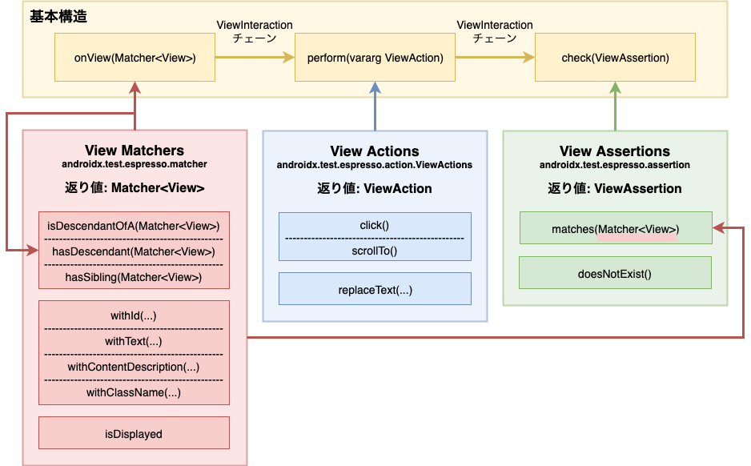</p>
<p>また、Espressoの公式サイトでも開発に便利な<a href="https://developer.android.com/training/testing/espresso/cheat-sheet" target="_blank">チートシート</a>を公開しています。<br>こちらもあわせてご覧ください。</p>


      </google-codelab-step>
    
      <google-codelab-step label="[座学] レイアウトインスペクタ" duration="10">
        <p>操作対象のViewをみつけるためにViewMatcherで検索条件を指定することを学びました。<br>この検索条件はたったひとつのViewにマッチするように絞り込む必要があります。<br>そのために、Viewの階層構造や目的のViewがもつ属性（リソースIDなど）を知る必要があります。<br>そこで活躍するのがレイアウトインスペクタです。</p>
<p>代表的なレイアウトインスペクタとして次の3つがあります。</p>
<ul>
<li>Android Studio付属のLayout Inspector</li>
<li>uiautomatorviewer</li>
<li>Appium Desktop</li>
</ul>
<p>今回は、Android Studio付属のLayout Inspectorとuiautomatorviewerの紹介をします。</p>
<h2 is-upgraded>Android Studio付属のLayout Inspector</h2>
<p>Android Studio付属のLayout Inspectorは原則としてデバッグ可能なアプリの画面しか調査できません。<br>そのかわり、非常に多くのView属性を調査できます。特に画面上に表示されていないViewについて、本当に存在しないのか、visibility属性がgoneの不可視のViewが存在していのか区別できるのはこのツールだけです。</p>
<ul>
<li><a href="https://developer.android.com/studio/debug/layout-inspector?hl=JA" target="_blank">公式ドキュメント</a></li>
</ul>
<h3 is-upgraded>使い方</h3>
<ol type="1">
<li>エミュレータで調べたい画面を開く</li>
<li>「Tools」-&gt;「Layout Inspector」をクリック</li>
<li>「Choose Process」というモーダルダイアログが開くので、1で開いているエミュレータのプロセスを選択する</li>
</ol>
<p>上の手順を踏むと、下のような表示がされます。<br>真ん中にエミュレータで開いている画面が表示されますので、そこから調べたい要素をクリックしてください。<br>そうすると、左のView Treeにはクリックした要素が階層構造のどこにあるのかが示され、右のProperties Tableには要素の属性の一覧が示されます。</p>
<p class="image-container">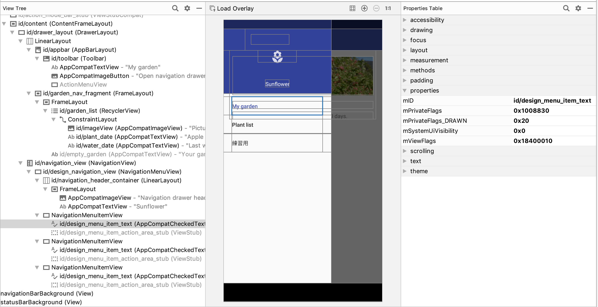</p>
<p>例えば、リソースIDが知りたければ、Properties Tableの「properties」-&gt;「mID」を見ると良いでしょう。</p>
<h2 is-upgraded>uiautomatorviewer</h2>
<p>uiautomatorviewerも任意のアプリの画面を調査できます。テストを書くという目的であればこちらのツールでも十分な場合が多いです。<br>ただ、表示されていないViewは取得できないなど、取得できる情報には限りがあるので、注意が必要です。</p>
<h3 is-upgraded>使い方</h3>
<ol type="1">
<li>エミュレータで調べたい画面を開く</li>
<li><code>$ANDROID_SDK_ROOT(or $ANDROID_HOME)/tools/bin/uiautomatorviewer &amp;</code> で起動する</li>
<li>uiautomatorviewer上のDevice Screenshotボタンを押す</li>
</ol>
<p>上の手順を踏むと、下のような表示がされます。</p>
<p class="image-container">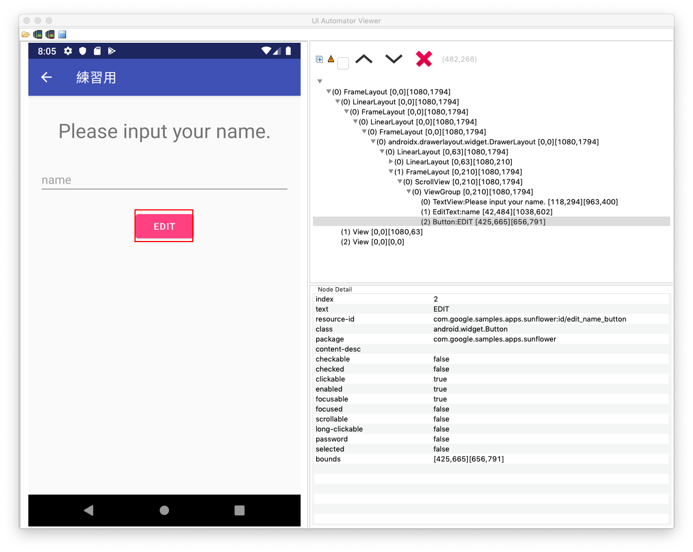</p>
<p>左側のペインで調べたい要素をクリックすると、右側のペインに要素の情報が表示されます。</p>


      </google-codelab-step>
    
      <google-codelab-step label="[演習] Espresso APIの基本" duration="15">
        <h2 is-upgraded>演習対象の画面</h2>
<p>Navigation Drawerから「練習用」を選択したときの画面が今回の演習でのテスト対象画面です。</p>
<p class="image-container">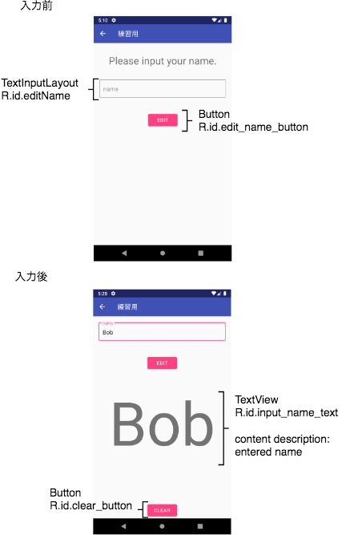</p>
<h2 is-upgraded>演習</h2>
<p><code>sharedTest</code>配下の<code>com.google.samples.apps.sunflower.PracticeFragmentTest</code>を開いてください。テストコード内にTODOと書かれている部分があるので、そこを埋めていってください。<br>Fragmentの起動までは実装されているので、その後のEspressoのコードを実装してください。</p>
<h2 is-upgraded>実行</h2>
<p>この演習で作成したテストは、Local Testとしても、Instrumentation Testとしても動作します。</p>
<p><code>Run &gt; Edit Configurations</code>で、それぞれの実行コンフィギュレーションを作成して実行してみてください。</p>
<h3 is-upgraded>Instrumented Testとしての実行</h3>
<ul>
<li><strong>＋</strong>ボタンを押し、「Android Instrumented Tests」を選ぶ</li>
<li><code>module</code>に「app」を指定する</li>
<li><code>Test</code>に「Class」を指定する</li>
<li><code>Class</code>に「PracticeFragmentTest」を指定する</li>
</ul>
<p>Edit Configurationsダイアログは次のようになります。</p>
<p class="image-container">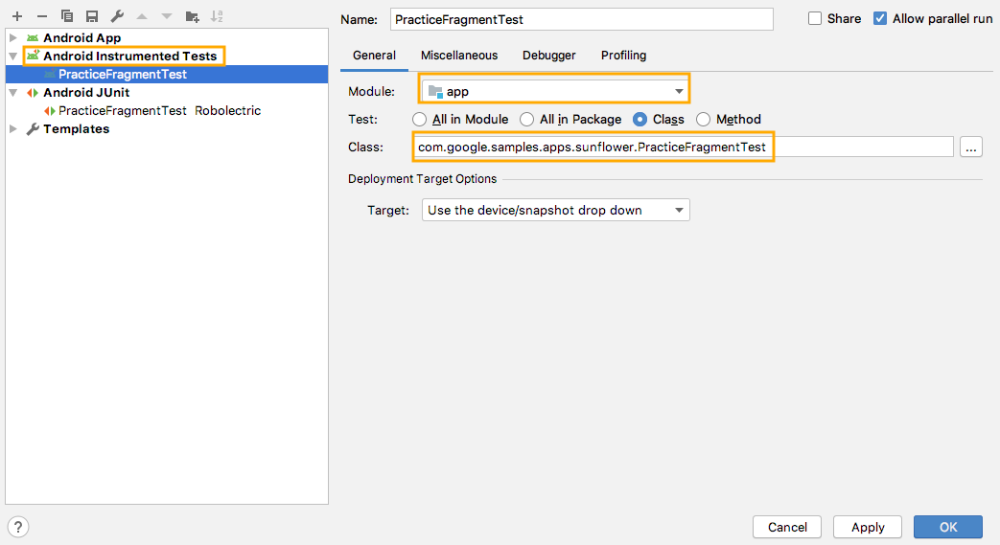</p>
<h3 is-upgraded>Local Testとしての実行</h3>
<ul>
<li><strong>＋</strong>ボタンを押し、「Android JUnit」を選ぶ</li>
<li><code>Use class path of module</code>に「app」を指定する</li>
<li><code>Class</code>に「PracticeFragmentTest」を指定する</li>
</ul>
<p>Edit Configurationsダイアログは次のようになります。</p>
<p class="image-container">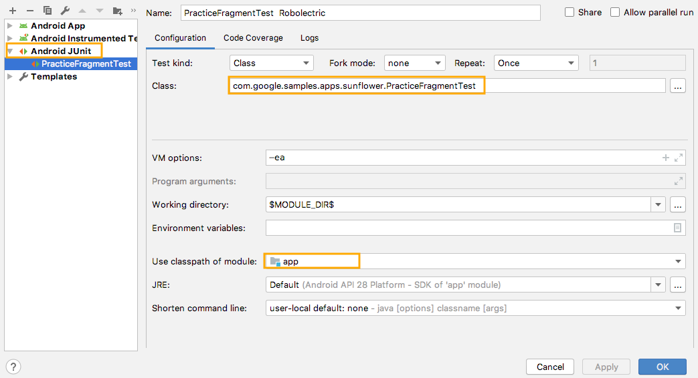</p>
<h2 is-upgraded>解答例</h2>
<p><code>sharedTest</code>配下の<code>com.google.samples.apps.sunflower.example.ExamplePracticeFragmentTest</code>に解答例をコミットしているので、適宜ご参照ください。<br>その他ScenarioAPIの使い方の紹介も含まれているので、興味があるかたはどうぞ参考にしてください。</p>


      </google-codelab-step>
    
      <google-codelab-step label="[座学] RecyclerViewを操作する" duration="5">
        <p>RecyclerViewはAndroidアプリでリスト画面を実装する際に使用されるUIコンポーネントです。<br>このセクションでは、EspressoでRecyclerViewをテストする方法を学んでいきます。</p>
<h2 is-upgraded>RecyclerViewを操作する</h2>
<p>RecyclerViewActionsクラスを使うと、RecyclerViewが保持しているアイテムビュー(<a href="https://developer.android.com/reference/androidx/recyclerview/widget/RecyclerView.ViewHolder.html?hl=en#itemView" target="_blank"><br>RecyclerView.ViewHolder.itemView</a>)を操作することができます。</p>
<p>RecyclerViewActionsクラスが提供しているメソッドを下にまとめました。</p>
<table>
<tr></tr>
<tr><td colspan="1" rowspan="1"><p>操作対象の指定方法</p>
</td><td colspan="1" rowspan="1"><p>（操作）スクロールのみ</p>
</td><td colspan="1" rowspan="1"><p>（操作）スクロール + アクション</p>
</td></tr>
<tr><td colspan="1" rowspan="1"><p>ポジション指定</p>
</td><td colspan="1" rowspan="1"><p>scrollToPosition(int)</p>
</td><td colspan="1" rowspan="1"><p>actionOnItemAtPosition(int, Action)</p>
</td></tr>
<tr><td colspan="1" rowspan="1"><p>アイテムビュー指定</p>
</td><td colspan="1" rowspan="1"><p>scrollTo(Matcher)</p>
</td><td colspan="1" rowspan="1"><p>actionOnItem(Matcher, Action)</p>
</td></tr>
<tr><td colspan="1" rowspan="1"><p>ViewHolder指定</p>
</td><td colspan="1" rowspan="1"><p>scrollToHolder(Matcher)</p>
</td><td colspan="1" rowspan="1"><p>actionOnHolderItem(Matcher, Action)</p>
</td></tr>
</table>
<p>以下は、ポジション指定を使用した例です。</p>
<p>R.id.recyclerViewが保持しているポジション3のアイテムビューまでスクロールします。<br>onViewにはRecyclerViewにマッチするViewMatcherを指定します。</p>
<pre><code>onView(withId(R.id.recyclerView))
        .perform(RecyclerViewActions.scrollToPosition(3))
</code></pre>
<p>スクロールした後にそのポジションのアイテムビューに対してViewActionを行いたい場合、actionOnItemAtPositionを使用できます。<br>actionOnItemAtPositionの第2引数にViewActionを設定すると、スクロール後にアクションを実行してくれます。</p>
<p>ポジション3のアイテムビューまでスクロールした後、そのアイテムビューをクリックする例です。</p>
<pre><code>onView(withId(R.id.recyclerView))
        .perform(RecyclerViewActions.actionOnItemAtPosition(3, click()))
</code></pre>


      </google-codelab-step>
    
      <google-codelab-step label="[座学]カスタムViewActionの作成" duration="5">
        <p>RecyclerViewActionsのメソッドは、<strong>アイテムビューに対するアクションしか実行できません</strong>。<br>そのため、少し複雑なRecyclerViewを操作したいときはViewActionを自作しなければなりません。</p>
<p>たとえば、次のような、各アイテムビューの子ビューにチェックボックスを持つRecyclerViewを考えてみましょう。</p>
<p class="image-container">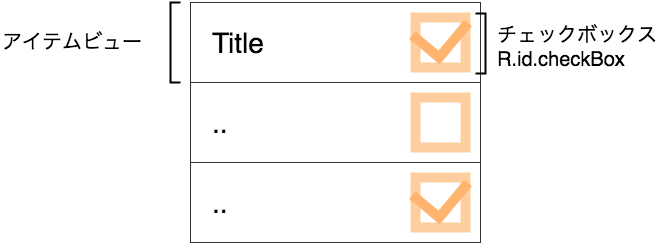</p>
<p>このチェックボックスをクリックするには、<strong>アイテムビューそのものではなく、</strong>その子ビューであるチェックボックスをクリックしなければなりません。</p>
<p>以降ではViewActionを自作することで、チェックボックスクリックを実現してみます。</p>
<h2 is-upgraded>ViewActionを自作してチェックボックスをクリックしてみる</h2>
<p>まず最初に、実装すべきViewActionのインターフェイス定義を見てみましょう。</p>
<pre><code>public interface ViewAction {
  /**
   * アクションを起こしたいViewが満たすべきマッチャーを返します。
   */
  public Matcher&lt;View&gt; getConstraints();

  /**
   * (割愛)
   */
  public String getDescription();

  /**
   * 引数に指定されたviewに対してアクションします。
   */
  public void perform(UiController uiController, View view);
}
</code></pre>
<p>この3つのメソッドのうち重要なのは<code>perform()</code>の実装です。<code>perform()</code>では、引数として与えられた<code>view</code>に対するアクションを実行するように実装します。</p>
<p>たとえば、(チェックボックスではなく)アイテムビューをクリックする次のコードでは、<code>click()</code>の<code>perform()</code>にはアイテムビューが渡されていることになります。</p>
<pre><code>// ポジション3のアイテムビューに対するクリック
onView(withId(R.id.recyclerView))
    .perform(RecyclerViewActions.
                 actionOnItemAtPosition(3, click())) 
</code></pre>
<p>次に、アイテムビューの子孫で、かつ指定されたリソースIDを持つViewをクリックする<code>clickDescendantViewWithId(@IdRes id: Int)</code>の実装を考えてみましょう。次のように使うことを想定しています。</p>
<pre><code>// ポジション3のアイテムビューの子孫である、IDがcheckBoxのViewをクリック
onView(withId(R.id.recyclerView))
    .perform(RecyclerViewActions.
                 actionOnItemAtPosition(3, clickDescendantViewWithId(R.id.checkBox)))
</code></pre>
<p><code>click()</code>が<code>clickDescendantViewWithId(R.id.checkBox))</code>に変わっている点だけが、アイテムビューをクリックするコードと違います。</p>
<p>このコードでも<code>clickDescendantViewWithId()</code>の<code>perform()</code>に渡されるViewはアイテムビューですから、<br>次のような方針で<code>perform()</code>を実装すれば子孫のViewをクリックできそうです。</p>
<ul>
<li>引数として渡されたview(=アイテムビュー)を起点に目的のリソースIDを持つViewを<code>findViewById(int)</code>を使って見付ける</li>
<li>目的のViewが見付かったら、そのViewに対して<code>click()</code>と同じ処理を行う</li>
</ul>
<p>その実装を書き下すと、次のようになります。</p>
<pre><code>override fun perform(uiController: UiController, view: View) {
    //ViewActions#click()の内部実装を引用
    val action = GeneralClickAction(Tap.SINGLE,
            GeneralLocation.VISIBLE_CENTER,
            Press.FINGER,
            InputDevice.SOURCE_UNKNOWN,
            MotionEvent.BUTTON_PRIMARY)

    // viewの実体はアイテムビュー
    // アイテムビューに対してfindViewByIdで子孫のViewを検索        
    val target = view.findViewById&lt;View&gt;(id)

    // 子孫のViewにたいして、clickを実行する
    action.perform(uiController, target)
}
</code></pre>
<p>残りの2つのメソッドも実装した完全版の<code>clickDescendantViewWithId(@IdRes id: Int)</code>は次の通りです。</p>
<pre><code>fun clickDescendantViewWithId(@IdRes id: Int): ViewAction {

    return object : ViewAction {

        // アクションを実行するViewをフィルターする
        override fun getConstraints(): Matcher&lt;View&gt; {
            // 指定したIDを子孫に持つViewに対して有効
            // 今回の場合は、R.id.checkBoxを子孫に持つView = アイテムビューに対して有効
            return hasDescendant(withId(id))
        }

        override fun getDescription(): String {
            return String.format(
                    &#34;performing Click Action with id matching: %d&#34;, id)
        }

        // どのようなアクションを実行するかを記述する
        override fun perform(uiController: UiController, view: View) {

            //ViewActions#click()の内部実装を引用
            val action = GeneralClickAction(Tap.SINGLE,
                    GeneralLocation.VISIBLE_CENTER,
                    Press.FINGER,
                    InputDevice.SOURCE_UNKNOWN,
                    MotionEvent.BUTTON_PRIMARY)

            // viewの実体はアイテムビュー
            // アイテムビューに対してfindViewByIdで子孫のViewを検索        
            val target = view.findViewById&lt;View&gt;(id)

            // 子孫のViewにたいして、clickを実行する
            action.perform(uiController, target)
        }
    }
}
</code></pre>


      </google-codelab-step>
    
      <google-codelab-step label="[座学]カスタムViewMatcherの作成" duration="5">
        <p>RecyclerViewActionsが提供するAPIにはマッチャーは含まれていません。<br>そのため、特定のアイテムビューや、その子孫にマッチするようなViewMatcherが必要な場合は自作しなければなりません。</p>
<p>再び、各アイテムビューの子ビューにチェックボックスを持つRecyclerViewを見てみます。</p>
<p class="image-container">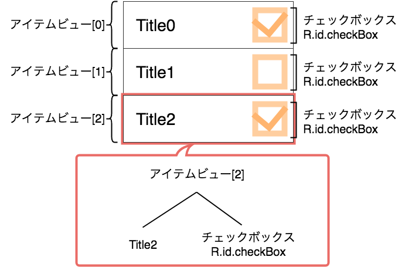</p>
<p>この図では、特に2番目のアイテムビューに着目し、そのツリー構造も併記しました。</p>
<p>もし「<code>n</code>個目のアイテムビュー」にマッチするViewMatcherを作ることができれば、「<code>n</code>番目のアイテムビューのチェックボックス」は、次のような条件(AND条件)で一意にマッチさせることができそうです。</p>
<ul>
<li>祖先に「<code>n</code>番目のアイテムビュー」を持つ</li>
<li>リソースIDが<code>R.id.checkBox</code>である</li>
</ul>
<p>以降では「<code>position</code>番目のアイテムビュー」にマッチするViewMatcherを返すメソッド<br><code>withItemViewAtPosition(recyclerView: Matcher&lt;View&gt;, position: Int): Matcher&lt;View&gt;</code><br>を自作してみましょう。</p>
<p>このメソッドを使えば、「<code>n</code>番目のアイテムビューのチェックボックス」にマッチするViewMatcherは次のように構築できます。</p>
<pre><code>allOf(
    withId(R.id.checkBox),
    isDescendantOfA(withItemViewAtPosition(withId(R.id.recyclerView), n)))
</code></pre>
<aside class="warning"><p>このマッチャーがあれば、前のセクションで自作した<code>clickDescendantViewWithId(@IdRes id: Int)</code>は不要です。次のように<code>click()</code>を使ってクリックすることができます。</p>
<pre><code>// 事前にスクロールする
onView(withId(R.id.recyclerView)).perform(RecyclerViewActions.scrollToPosition(n))

// さきほど構築したViewMatcherを使って目的のチェックボックスをクリックする
onView(allOf(
        withId(R.id.checkBox),
        isDescendantOfA(withItemViewAtPosition(withId(R.id.recyclerView), n))))
    .perform(click())        
</code></pre>
</aside>
<h2 is-upgraded>「n番目のアイテムビュー」にマッチするViewMatcherを自作してみる</h2>
<p>前述の<code>withItemViewAtPosition(recyclerView: Matcher&lt;View&gt;, position: Int)</code>メソッドは、次の条件を全て満たすアイテムビューにマッチするViewMatcherを返します。</p>
<ul>
<li>条件①: そのアイテムビューが、引数<code>recyclerView</code>にマッチする<code>RecyclerView</code>に所属していること</li>
<li>条件②: そのアイテムビューの位置番号が、引数<code>position</code>番目であること</li>
</ul>
<p>カスタムViewMatcherを実装するには、抽象クラス<a href="http://hamcrest.org/JavaHamcrest/javadoc/1.3/org/hamcrest/TypeSafeMatcher.html" target="_blank"><br>TypeSafeMatcher&lt;View&gt;</a>を継承・実装するのが簡単です。</p>
<p>TypeSafeMatcherを継承したObjectから、実装しなければならないメソッドを抜粋しました。</p>
<pre><code>object : TypeSafeMatcher&lt;View&gt;() {

   /**
    * 引数に渡された`view`にマッチしたときは`true`を返す
    * マッチしなければ`false`を返す
    */
    override fun matchesSafely(view: View): Boolean  {
    }

    override fun describeTo(description: Description) {
    }
}
</code></pre>
<p>特に重要なのが<code>matchesSafely(view: View)</code>メソッドです。</p>
<p>このメソッドを、以下の仕様を満たすように実装します。</p>
<ul>
<li>引数に渡された<code>view</code>にマッチしたときは<code>true</code>を返す</li>
<li>マッチしなければ<code>false</code>を返す</li>
</ul>
<p>Espressoは、画面上のViewひとつひとつについて、それを引数にこのメソッドを呼び出していきます(Visitorパターン)。そして<code>true</code>を返したViewを「マッチしたView」とみなすのです。</p>
<p>今回はアイテムビューとマッチさせたいのですから、引数<code>view</code>に前述の2つの条件を満たすアイテムビューが渡されたときだけ<code>true</code>を返すように実装します。</p>
<p>改めて2つの条件を確認してみましょう。</p>
<ul>
<li>条件①: そのアイテムビューが、引数<code>recyclerView</code>にマッチする<code>RecyclerView</code>に所属していること</li>
<li>条件②: そのアイテムビューの位置番号が、引数<code>position</code>番目であること</li>
</ul>
<p>それを踏まえて<code>withItemViewAtPosition(recyclerView: Matcher&lt;View&gt;, position: Int): Matcher&lt;View&gt;</code>の実装を見てみましょう。</p>
<pre><code>fun withItemViewAtPosition(recyclerView: Matcher&lt;View&gt;, position: Int): Matcher&lt;View&gt; {
    return object : TypeSafeMatcher&lt;View&gt;() {

        // 操作の対象にしたいViewがマッチするような条件をこのメソッドに記述する
        // 戻り値がtrueのときにマッチしたとみなされる
        override fun matchesSafely(view: View): Boolean {

            // matchesSafleyに渡されてきた引数 view (アイテムビュー)が
            // 以下の条件を満たすかどうかチェックする
            // 
            // 条件①: 
            //     そのアイテムビューがrecyclerViewにマッチするRecyclerViewに所属していること
            //
            // アイテムビューの親は必ずRecyclerViewのはず
            val parent = view.parent
            if (parent !is RecyclerView || !recyclerView.matches(parent)) {
                // RecyclerView以外のときは早期リターンをする
                return false
            }

            // 次に以下の条件を満たすかどうかチェックする
            // 条件②: そのアイテムビューの位置番号がposition番目であること

            // 親RecyclerViewからposition番目のViewHolderを取得する
            val viewHolder = parent.findViewHolderForAdapterPosition(position)

            // そのViewHolderのアイテムビューと、matchesSafleyに渡されてきた引数 viewが
            // 一致していることをチェックする
            return viewHolder != null &amp;&amp; viewHolder.itemView == view
        }

        override fun describeTo(description: Description) {
            description.appendText(&#34;with error: &#34;)
            recyclerView.describeTo(description)
        }
    }
}
</code></pre>


      </google-codelab-step>
    
      <google-codelab-step label="[演習] RecyclerViewを操作する" duration="15">
        <h2 is-upgraded>演習用画面</h2>
<p>Navigation Drawerから「Plant list」を選択したときの画面が今回の演習でのテスト対象画面です。</p>
<p class="image-container">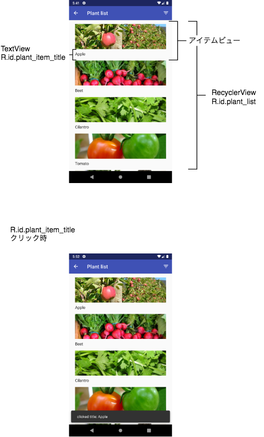</p>
<h2 is-upgraded>演習</h2>
<p><code>androidTest</code>配下の<code>com.google.samples.apps.sunflower.PlantListRecyclerViewTest</code>を開いてください。テストコード内にTODOと書かれている部分があるので、そこを埋めていってください。</p>
<h2 is-upgraded>解答例</h2>
<p><code>androidTest</code>配下の<code>com.google.samples.apps.sunflower.example.ExamplePlantListRecyclerViewTest</code>に解答例をコミットしているので、適宜ご参照ください。</p>


      </google-codelab-step>
    
      <google-codelab-step label="[座学] 画面更新の待ち合わせ" duration="5">
        <p>UIテストで直面しがちな問題のひとつに画面更新の完了を待たずに検証を行ってしまうというものがあります。<br>例えば、つぎのようなテストケースを考えてみます。</p>
<ol type="1">
<li>ユーザーIDとパスワードを入力してログインボタンを押す</li>
<li>3秒間スリープし、ログインが完了するのを待つ</li>
<li>ログイン完了後、画面上に表示される「ログイン成功」のメッセージが表示されていることを確認する</li>
</ol>
<p>手順2でログイン完了するまでの時間は一定ではなく、1秒で終わることもあれば、10秒かかることもあります。<br>10秒かかるとき、テストは失敗します。1秒で終わるとき、テストは失敗しませんが、2秒余分にテスト実行時間が長くなります。<br>実行によって、テストが成功したり失敗したりする不安定なテストは、原因解析に時間がかかり、自動テストの運用に悪影響が及びます。</p>
<h2 is-upgraded>Espressoの自動同期機能</h2>
<p>Espressoには自動同期機能があり、画面更新の完了を自動的に待ち合わせてくれます。<br>次の条件をすべて満たしたときに画面更新が完了したと判断します。</p>
<ul>
<li>メインスレッドのメッセージキューが空である</li>
<li>AsyncTaskのバックグラウンドスレッドで実行中のタスクがない</li>
<li>IdlingResourceがすべてアイドル状態である</li>
</ul>
<p>　逆に、下記のケースでは自動同期機能はうまく動作しません。</p>
<ul>
<li>非同期処理にAsyncTask以外を使っている<br><ul>
<li>昨今ではAsyncTaskではなくRxJavaやKotlinのcoroutineを使って実装することが多いため、うまく動作するケースが少なくなっている</li>
</ul>
</li>
<li>アニメーション<br><ul>
<li>アニメーションを実行している場合、アニメーションが終了するのを待つまでの間にEspressoはタイムアウトする可能性がある（この問題に関しては後述するUI Automatorにて解決可能です）</li>
</ul>
</li>
<li>更新をスケジュールするメカニズムの差異<br><ul>
<li>たとえば、Data Bindingは、メインのLooperキュー（Espressoが監視しているもの）の代わりにChoreographerを使用して更新をする</li>
</ul>
</li>
</ul>
<p>これらの場合、開発者自身が自動同期機能以外を使う必要があります。</p>
<p>以下のようなフローで、対応法を考えると良いと思います。</p>
<ol type="1">
<li>Espressoが提供する自動同期機能が使えるなら使う</li>
<li>自動同期機能が使えないとき、すでに提供されているIdlingResourceが入れられそうなところがないかを調査する</li>
<li>idlingResourceの適用が難しいとき、うまく動作しない箇所に明示的な待ち合わせ処理を書いていく</li>
</ol>
<p>次ページ以降で、自動同期機能以外の待ち合わせ処理を紹介していきます。</p>


      </google-codelab-step>
    
      <google-codelab-step label="[座学] 明示的な待ち合わせ処理を行う" duration="5">
        <p>ここでは、UI Automatorを使った明示的な待ち合わせ処理を紹介します。</p>
<p>基本的な使い方は次のようになります。</p>
<pre><code>val uiDevice = UiDevice.getInstance(InstrumentationRegistry.getInstrumentation())

val waitSuccess = uiDevice.wait(待ち合わせ条件, タイムアウト値)
assertTrue(waitSuccess);
</code></pre>
<p><code>uiDevice</code>は、一度<code>setUp()</code>等でインスタンスを取得したらそれを使い回すことができます。<br>待ち合わせ条件は、Untilクラスのメソッドのうち、戻り値の型がSearchCondition&lt;R&gt;型のものです。<br>通常は、次の2つのメソッドがあることを覚えておけば十分でしょう。</p>
<ul>
<li>hasObject(BySelector): 検索条件（BySelector）を満たすViewが存在するまで待つ</li>
<li>gone(BySelector): 検索条件を満たすViewが存在しなくなるまで待つ</li>
</ul>
<p>BySelector型の引数にはByクラスに定義されているstaticメソッドが利用できます。<br>下の例では、CompletedであるViewが現れるまで待つことを表現しています。</p>
<pre><code>val waitSuccess = uiDevice.wait(Until.hasObject(By.text(&#34;Completed&#34;)), 5000L
assertTrue(waitSuccess)
</code></pre>
<p>待ち合わせ条件として、複数の条件をANDでつなげたものを指定したいときは下のようにします。<br>リソースIDがR.id.textViewかつ表示テキストがCompletedであるViewが現れるまで待つことを表現しています。<br>リソースIDを検索条件に指定するときは、By.res()を使用します。res()の引数は文字列型です。</p>
<pre><code>val cond = Until.hasObject(By.res(&#34;com.example.sample:id/textview&#34;).text(&#34;Completed&#34;))
val waitSuccess = uiDevice.wait(cond, 5000L)
assertTrue(waitSuccess)
</code></pre>
<p>リソースIDの文字列表記は次のような規則を持っています。</p>
<pre><code>&lt;テスト対象アプリの applicationId&gt;:id/&lt;リソースIDのフィールド名&gt;
</code></pre>
<p>この規則にしたがって毎回文字列に変換することは大変なので、ユーティリティメソッドを定義すると楽になります。</p>
<pre><code>fun toResourceName(resId: Int): String {
    return ApplicationProvider
            .getApplicationContext&lt;Application&gt;()
            .resources
            .getResourceName(resId)
}
</code></pre>


      </google-codelab-step>
    
      <google-codelab-step label="[演習] 明示的な待ち合わせ処理を行う" duration="5">
        <h2 is-upgraded>演習用画面</h2>
<p>Plant listで植物を選択した際に遷移する、Plant Detail画面がこの演習の対象画面です。</p>
<p class="image-container">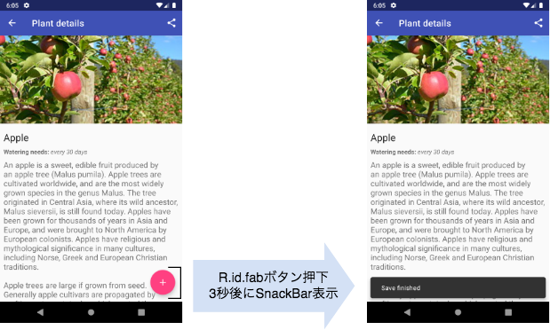</p>
<h3 is-upgraded>補足:DataBinding用のIdlingResource</h3>
<p>このテストコードでは、<a href="https://github.com/googlecodelabs/android-testing/blob/codelab2019/app/src/sharedTest/java/com/example/android/architecture/blueprints/todoapp/util/DataBindingIdlingResource.kt?source=post_page---------------------------" target="_blank">DataBindingIdlingResource</a>を使用しています。そのActivity/Fragment内のData bindingがアイドル状態かビジー状態かを判断します。</p>
<p>演習内容とは関係ないため、詳細は割愛します。</p>
<h2 is-upgraded>演習</h2>
<p><code>androidTest</code>配下の<code>com.google.samples.apps.sunflower.PlantDetailFragmentTest</code>を開いてください。<br>テストメソッド<code>addPlantToGarden_UIAutomator</code>にTODOと書かれている部分があるので、そこを埋めていってください。<br>また、前のセクションで紹介したユーティリティメソッド<code>toResourceName</code>が実装済みですのでご活用ください。</p>
<h2 is-upgraded>解答例</h2>
<p><code>androidTest</code>配下の<code>com.google.samples.apps.sunflower.example.ExamplePracticeFragmentTest</code>に解答例をコミットしているので、適宜ご参照ください。</p>


      </google-codelab-step>
    
      <google-codelab-step label="[座学] IdlingResource" duration="10">
        <p>Espressoの自動同期機能が画面更新が完了したと判断する条件は次のとおりでした。</p>
<ul>
<li>メインスレッドのメッセージキューが空である</li>
<li>AsyncTaskのバックグラウンドスレッドで実行中のタスクがない</li>
<li><strong>IdlingResourceがすべてアイドル状態である</strong></li>
</ul>
<p>3つめの<a href="https://developer.android.com/training/testing/espresso/idling-resource" target="_blank">IdlingResource</a>は、Espressoが提供する自動同期機能をカスタマイズするためのインターフェースです。</p>
<p>このIdlingResourceを活用することで、開発者が自動同期機能が有効になるタイミングをコントロールすることができるようになります。</p>
<h2 is-upgraded>IdlingResourceの仕組み</h2>
<p>EspressoではIdlingResourceを使ってどのように待ち合わせをしているのでしょうか。</p>
<p>IdlingResourceは2つの状態を持っており、それによってEspressoが次の操作を実行するか待機するかを判断します。</p>
<table>
<tr></tr>
<tr><td colspan="1" rowspan="1"><p>IdlingResourceの状態</p>
</td><td colspan="1" rowspan="1"><p>Espressoの判定</p>
</td></tr>
<tr><td colspan="1" rowspan="1"><p>ビジー状態</p>
</td><td colspan="1" rowspan="1"><p>次の操作を実行せずに待機する</p>
</td></tr>
<tr><td colspan="1" rowspan="1"><p>アイドル状態</p>
</td><td colspan="1" rowspan="1"><p>次の操作を実行してテストを継続する</p>
</td></tr>
</table>
<p>図にすると次のようなイメージです。</p>
<p class="image-container">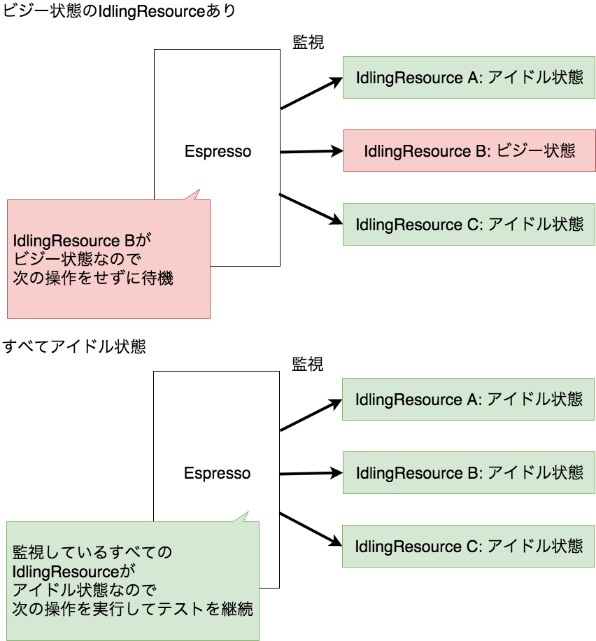</p>
<h2 is-upgraded>CountingIdlingResource</h2>
<p>Espressoでは、いくつかのIdlingResourceの実装を提供していますが、代表的なものは、<a href="https://github.com/android/android-test/blob/master/espresso/idling_resource/java/androidx/test/espresso/CountingIdlingResource.java" target="_blank">CountingIdlingResource</a>クラスです。<br>CountingIdlingResourceは同時に動いている非同期処理の数をカウンタで管理するIdlingResource実装です。</p>
<p>プログラマは次のルールにしたがってCountingIdlingResourceクラスのメソッドを呼び出す必要があります。</p>
<ul>
<li>非同期処理が始めるたびにincrement()メソッドを呼び出す<br><ul>
<li>内部のカウンタが1増加する</li>
</ul>
</li>
<li>非同期処理が完了するたびにdecrement()メソッドを呼び出す<br><ul>
<li>内部のカウンタが1減少する</li>
</ul>
</li>
</ul>
<p>そして、カウンタが0のときをアイドル状態、0より大きい時をビジー状態とします。</p>
<p>そのため、管理したい非同期処理の開始・終了をフックできるのであれば、このCountingIdlingResourceを使って簡単に待ち合わせを実現できます。</p>
<p>次のコードは、Coroutineの処理の開始と終了にCountingIdlingResourceを組み込む例です。</p>
<pre><code>fun addPlantToGarden() {

    val countingIdlingResource = CountingIdlingResource(&#34;CountingIdlingResource&#34;)

　　 // 処理の開始時にカウンタを1増加 = ビジー状態になる
    countingIdlingResource.increment()

    val job = viewModelScope.launch {
        repository.addGardenPlanting(plantId)
    }

    // Coroutineのjobの終了はinvokeOnCompletionでフックできるので、そこでdecrementをする
    job.invokeOnCompletion {
        // 処理の開始時にカウンタが1減少 = 0になり、アイドル状態になる
        countingIdlingResource.decrement()
    }
}
</code></pre>
<h2 is-upgraded>サードパーティ製のIdlingResource</h2>
<p>RxJavaのような、独自の非同期処理機構を提供するライブラリを使っている場合は、ライブラリに応じてIdlingResourceの実装が提供されていることがあります。<br>その場合は、迷わず導入して恩恵に授かりましょう。</p>
<p>サードパーティ製のIdlingResourceには次のようなものがあります。</p>
<ul>
<li><a href="https://github.com/JakeWharton/okhttp-idling-resource" target="_blank">okhttp-idling-resource</a></li>
<li><a href="https://github.com/square/RxIdler" target="_blank">RxIdler</a></li>
</ul>
<h2 is-upgraded>IdlingResourceの登録・解除</h2>
<p>監視したいIdlingResourceを追加するには、EspressoのIdlingRegistryに登録・解除する必要があります。</p>
<p>IdlingRegistryクラスの<code>register()</code>メソッドで登録し、<code>unregister()</code>メソッドで解除してください。</p>
<pre><code>@Test
fun test() {

    // CountingIdlingResource(後述)を登録する例
    val idlingResource = CountingIdlingResource(&#34;Idling Resource&#34;)

    // idlingResourceを登録する
    IdlingRegistry.getInstance().register(idlingResource)

    // Fragmentを起動する
    val scenario = launchFragmentInContainer&lt;ExampleFragment&gt;()

    /*
        テスト実装
    */

    // idlingResourceの登録を解除する
    IdlingRegistry.getInstance().unregister(idlingResource)

}
</code></pre>
<h3 is-upgraded>ActivityのonCreate()で非同期処理が始まる場合</h3>
<p>前述のActivitySenarioRuleを使用した場合、テスト開始時にはすでにActivityはonResume()まで完了した状態になっています。<br>そのため、onCreate()で非同期処理が始まるようなケースには対応できません。</p>
<p>onCreate()の時点でIdlingResourceの登録が済んだ状態にするためには、下の例のように、<br>IdlingResourceの登録をして、手動でActivityを起動させる必要があります。</p>
<pre><code>@Test
fun test() {

    // idlingResourceを登録する
    IdlingRegistry.getInstance().register(idlingResource)

    // Activityを起動する
    // useを使ってblockを出たら自動的にcloseするようにする
    launchActivity&lt;ExampleActivity&gt;().use {
        
        /*
            このブロックの中でActivityがRESUMED状態
            テスト実装をここに書く
        */
    }

    // idlingResourceの登録を解除する
    IdlingRegistry.getInstance().unregister(idlingResource)
}
</code></pre>
<p>ActivitySenarioはテスト終了後に<code>close</code>を呼ぶことが推奨されています。<br>ActivitySenarioRuleではRuleの中で自動的に呼んでくれますが、ActivityScenarioを直接使う場合は自身で<code>close</code>を呼びます。<br><code>use</code>をつかうようにすると、<code>close</code>の呼び忘れが防げるのでおすすめです。</p>


      </google-codelab-step>
    
      <google-codelab-step label="[座学]Coroutineの待ち合わせ" duration="10">
        <p>Coroutineを使用している場合、IdlingResource実装が提供されていないため開発者が待ち合わせの仕組みを用意する必要があります。</p>
<p>このセクションでは、いくつかの待ち合わせの手段を紹介します。</p>
<h2 is-upgraded>プロダクトコードにIdlingResourceを埋め込む</h2>
<p>前のセクションでCoroutineの処理の開始と終了にあわせて、CountingIdlingResourceのincrementとdecrementをする例を紹介しました。<br>このようにプロダクトコード側でCountingIdlingResourceの埋め込みができれば、簡単にCoroutineの待ち合わせを実現することができます。</p>
<p>その場合、IdlingResourceをシングルトンにするか、IdlingResourceのインスタンスをプロダクトコードの外から渡せるようにします。そうすることで、プロダクトコードで参照しているIdlingResourceのインスタンスをテストコードから登録・解除できるようにします。</p>
<p><strong>補足</strong><br>Espressoのドキュメントでは、プロダクトコードにIdlingResourceを追加することを<a href="https://developer.android.com/training/testing/espresso/idling-resource#integrate-recommended-approach" target="_blank">推奨</a>しています。ですので、プロダクトコードに導入することも視野に入れつつ、プロダクトに適した方法を選択するのがよいでしょう。</p>
<h2 is-upgraded>IdlingThreadPoolExecutorを使用する</h2>
<p>Espressoは<code>IdlingThreadPoolExecutor</code>を提供しています。これは、既にIdlingResourceのincrementとdecrementが組み込まれているThreadPoolExecutorです。<br>テストコード側で非同期の処理をこのExecutorに差し替えることができれば、プロダクトコードでIdlingResourceを呼び出す必要がなくなります。</p>
<p><code>androidTest</code>配下の<code>com.google.samples.apps.sunflower.PlantDetailFragmentTest</code>に<code>addPlantToGarden_idlingThreadPoolExecutor</code>メソッドがあります。これがIdlingThreadPoolExecutorを使った待ち合わせの演習になっていますので、興味のある方は試してみてください。</p>
<p>ポイントは以下です。</p>
<ul>
<li>GardenPlantingRepository#createGardenPlantingではDispatcher.IOを使用しており、ここをIdlingThreadPoolExecutorを使うように差し替える</li>
<li>Dispatherをラップして、任意のDispatcherに差し替えられるようにする(cf:<a href="https://github.com/DroidKaigi/conference-app-2019/blob/94a9955b319720cacfd28975ba9fb4698f043631/corecomponent/androidcomponent/src/main/java/io/github/droidkaigi/confsched2019/ext/CoroutinePlugin.kt" target="_blank">DroidKaigi2019#CoroutinePlugin</a>)</li>
<li>プロダクトコード側もDispatcher参照時にラッパーを介すようにする</li>
<li>IdlingThreadPoolExecutorの<code>asCoroutineDispatcher()</code>でCoroutineDispatcherへの変換が可能</li>
<li>テスト時はDispatherのラッパーに、IdlingThreadPoolExecutorから作成したCoroutineDispatcherに差し替える</li>
</ul>
<aside class="warning"><p>Dispatherの差し替えを行った場合、厳密なE2Eではないことに注意が必要です。たとえば、Thread poolの数などがプロダクトコードとは一致しないかもしれません。</p>
</aside>
<h2 is-upgraded>非同期処理をテストのスコープから外し、IntegrationTestとして実装する</h2>
<p>非同期処理など通信を行っているクラスをテストダブルに差し替え、実際には非同期処理を行わないようにすることもできます。<br>この場合のUIテストはE2Eではなく、Integration Test(or Unit Test)になります。<br>Fidelityは下がりますが、テストの安定性・速度が向上します。また、テストダブルをつかうことによって、任意の条件のテストが簡単にできるようになります。</p>
<p>このようなテストをしたい場合、テストコードでActivityやFragmentの依存を差し替えられるようにする必要があります。<br>DIライブラリやServiceLocator、<a href="https://developer.android.com/reference/androidx/fragment/app/FragmentFactory" target="_blank">FragmentFactory</a>の導入を検討してください。</p>


      </google-codelab-step>
    
      <google-codelab-step label="おつかれさまでした！" duration="1">
        <p>Espressoを使ったUIテストの書き方を学びました。<br>今後のあなたの仕事に役立てていただけるのであれば幸いです。</p>
<h2 is-upgraded>このCodelabについて</h2>
<p>このCodelabは<a href="https://swet.dena.com/about" target="_blank">DeNAのSWETグループ</a>が作成しました。<br></p>
<p>もしご不明点や間違い等あれば、<a href="https://dena.github.io/codelabs/" target="_blank">トップページ</a>の「このページについて」に記載されている手順でIssueを起票していただければと思います。</p>
<p>このCodelabの一部は、関係者の許諾の元、書籍「<a href="https://peaks.cc/books/android_testing" target="_blank">Androidテスト全書</a>」の5章「UI テスト（Espresso編）」の内容を一部流用しています。</p>
<p>「Androidテスト全書」にはここで紹介する内容のほか、役立つ情報が満載です。気になる方は読んでみてください。</p>
<div class="peaks_widget" style="overflow:hidden; padding:20px; border:2px solid #ccc;"><div class="peaks_widget__image" style="float:left; margin-right:15px; line-height:0;"><a target="_blank" id="purchase" href="https://peaks.cc/android_testing"></a></div><div class="peaks_widget__info"><p style="margin:0 0 3px 0; font-size:110%; font-weight:bold;"><a target="_blank" id="purchase" href="http://peaks.cc/android_testing">Androidテスト全書</a></p><ul style="margin:0; padding:0;"><li style="font-size:90%; list-style:none;"><span>著者：</span><span>白山 文彦,</span><span>外山 純生,</span><span>平田 敏之,</span><span>菊池 紘,</span><span>堀江 亮介,</span></li><li style="font-size:90%; list-style:none;">製本版,電子版</li><li style="font-size:90%; list-style:none;"><a target="_blank" id="purchase" style="text-decoration:underline; color:#1DA1F2;" href="http://peaks.cc/android_testing">PEAKSで購入する</a></li></ul></div></div>
<h2 is-upgraded>フィードバックのお願い</h2>
<p>最後に、お手数ですが、次ページで本Codelabに対するフィードバックをいただけますと嬉しいです。<br>今後の私たちの活動に活かしていきたいと思います。</p>


      </google-codelab-step>
    
      <google-codelab-step label="感想・フィードバック" duration="1">
        <iframe src="https://docs.google.com/forms/d/e/1FAIpQLSd7oQL3N52g1ikIhFcO8Yb7PNgnMfxh6Vtbe1RuiOwII9qHZQ/viewform?entry.521550274=EspressoAPIを使いこなしてUIテストを書いてみよう" width="640" height="3051" frameborder="0" marginheight="0" marginwidth="0">読み込んでいます</iframe>


      </google-codelab-step>
    
  </google-codelab>

  <script src="https://storage.googleapis.com/codelab-elements/native-shim.js"></script>
  <script src="https://storage.googleapis.com/codelab-elements/custom-elements.min.js"></script>
  <script src="https://storage.googleapis.com/codelab-elements/prettify.js"></script>
  <script src="https://storage.googleapis.com/codelab-elements/codelab-elements.js"></script>

</body>
</html>
